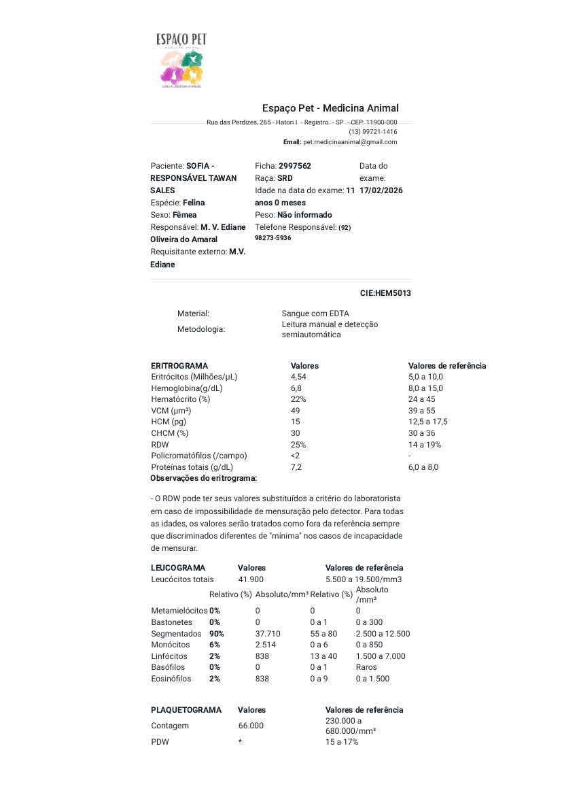
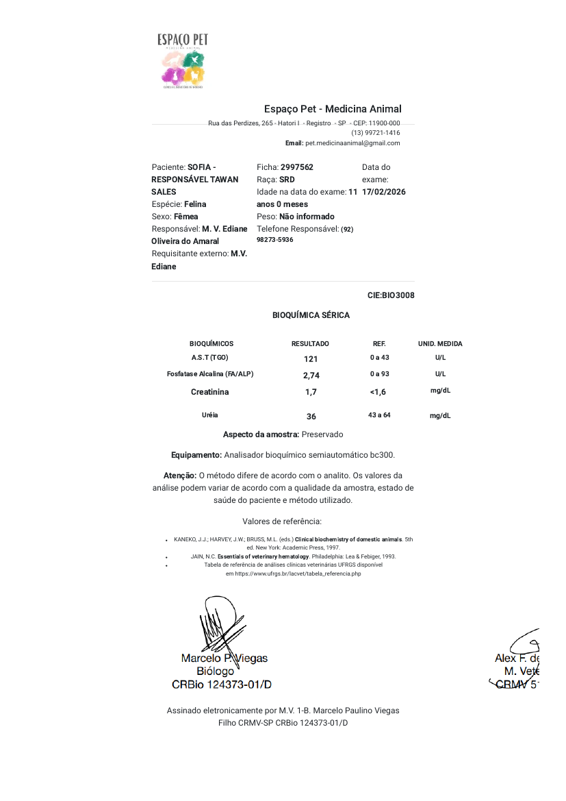
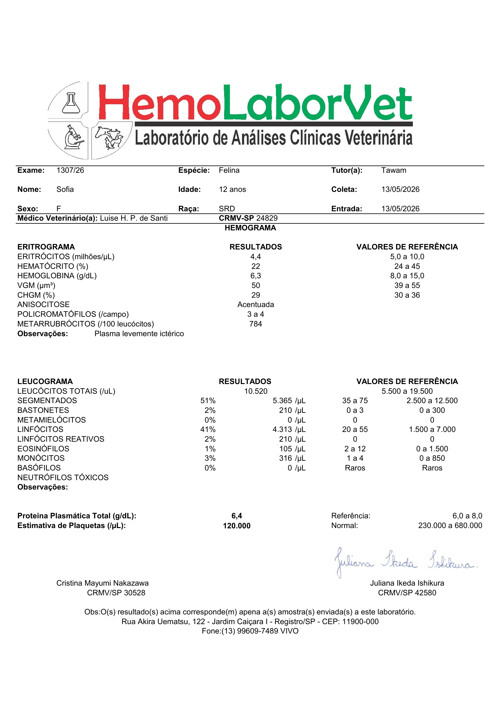
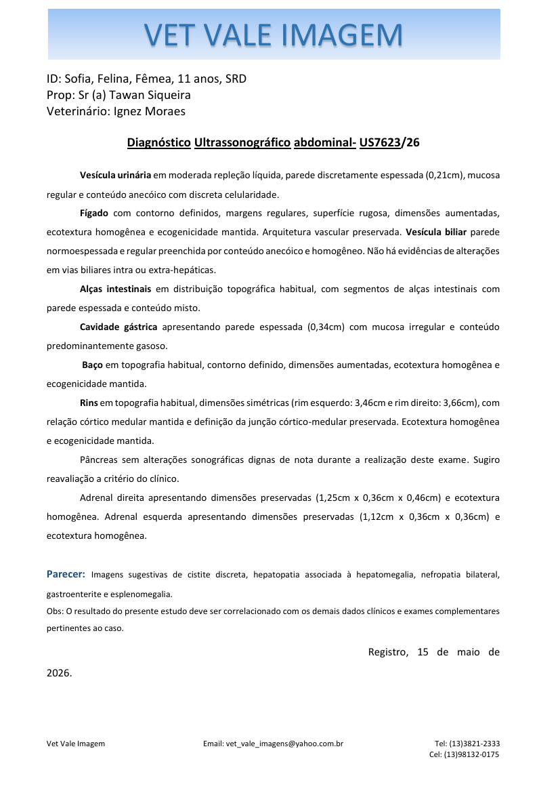
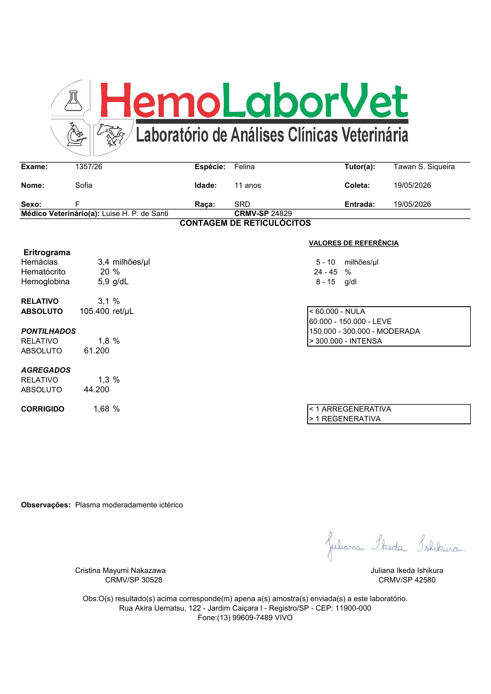
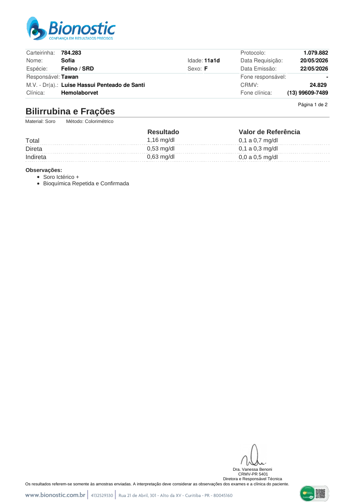
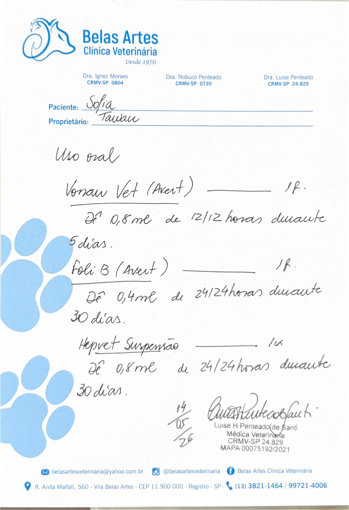
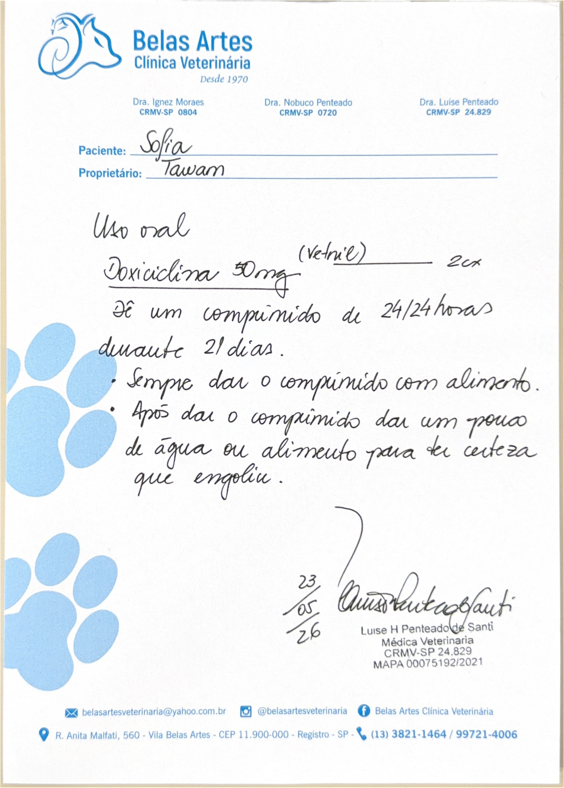

Eixo hepatobiliar
GGT muito elevada, bilirrubinas aumentadas, soro/plasma ictérico e ultrassonografia com hepatomegalia. Esse conjunto forma o eixo de maior consistência documental no caso.
Dossiê clínico-informativo elaborado para organizar exames laboratoriais, ultrassonografia, prescrições e comunicações veterinárias de 2026. O objetivo é facilitar a leitura do caso, preservar os dados originais e apoiar a continuidade da avaliação por profissionais veterinários.
Esta síntese não estabelece diagnóstico. Ela organiza os achados documentados e destaca os pontos que merecem correlação com exame físico, evolução clínica, resposta terapêutica e exames complementares.
GGT muito elevada, bilirrubinas aumentadas, soro/plasma ictérico e ultrassonografia com hepatomegalia. Esse conjunto forma o eixo de maior consistência documental no caso.
Hemoglobina e hematócrito baixos desde fevereiro, com piora em maio. Há indícios de resposta medular, porém de intensidade discreta ou limítrofe.
A ultrassonografia descreve alterações gástricas/intestinais, cistite discreta e parecer renal que requer correlação com urinálise, SDMA, pressão arterial e relação proteína/creatinina urinária.
Peso informado pelo tutor em 05/06/2026, aferido em balança nova. O tutor relata peso inicial aproximado de 3,8 kg na clínica; se esse dado for confirmado, a perda estimada é de cerca de 27,6% do peso corporal. Como houve divergência entre balanças, a documentação deve registrar o peso atual como confiável e solicitar confirmação do peso inicial nos registros clínicos.
O tutor relata vômitos repetidos após Hemolipet/Hepvet, vômito imediato após Vonau e vômitos associados à administração inicial da doxiciclina com Recovery. Houve melhora parcial após mudança de forma de administração, mas a Sofia permanece com perda muscular importante e estado geral crítico.
Atualização do tutor: a Sofia não aceitou bem a Royal Canin para sensibilidade digestiva, possivelmente por tamanho ou textura do grão. A ração Golden Senior para gatos idosos é aceita em pequenas porções. Este dado deve ser interpretado junto à meta calórica diária, pois aceitar pequenas quantidades não garante ingestão suficiente para recuperar peso e massa muscular.
Informações relatadas pelo tutor em 05/06/2026, inseridas como dados clínicos de evolução. A finalidade é documentar a resposta observada em casa, destacar riscos e facilitar a análise por outro profissional veterinário.
O tutor relata que Hemolipet associado a Hepvet, prescritos como suporte para anemia/vitaminas e fígado, provocavam vômito em todas as administrações. A frequência descrita no período foi de aproximadamente 4 a 6 episódios de vômito por dia. Esse padrão deve ser registrado como intolerância importante ou reação adversa suspeita, sem concluir isoladamente que os produtos foram a causa única, pois havia doença de base concomitante.
O tutor informa que a Sofia vomitou logo após a administração do Vonau. Isso impede concluir que o antiemético foi ineficaz, porque pode não ter havido tempo suficiente para absorção adequada. Para segunda opinião, o ponto central é discutir controle de náusea por via mais tolerável, inclusive opção injetável ou manejo hospitalar, caso o exame físico indique necessidade.
Na fase inicial, quando a doxiciclina era administrada com pequenas quantidades de Recovery Royal Canin antes e depois, mesmo diluídas em água, a Sofia apresentava náusea e vômitos. Após cerca de uma semana, o tutor passou a dividir o comprimido e administrar com água ou água de sachê, relatando melhor tolerância e redução dos vômitos para aproximadamente 1 episódio ao dia. Essa informação sugere que a forma de administração interferiu na tolerância, mas qualquer fracionamento ou ajuste precisa ser validado pelo veterinário.
O peso confiável atual é 2,75 kg. O tutor relata peso inicial aproximado de 3,8 kg na clínica; se confirmado, isso representa perda estimada de cerca de 27,6% do peso corporal. Há relato de perda acentuada de massa muscular e ossos da coluna mais aparentes. Em uma gata idosa, anêmica, com alterações hepatobiliares e vômitos persistentes, esse conjunto aumenta a urgência de reavaliação presencial.
O tutor informa que adquiriu Golden Senior para gatos idosos e Royal Canin para gatos com sensibilidade digestiva. A Royal Canin não está sendo aceita, provavelmente por tamanho, textura ou baixa palatabilidade individual no momento. A Golden Senior é ingerida em pequenas porções. Para a avaliação veterinária, a informação central não é apenas qual alimento foi oferecido, mas a quantidade efetivamente ingerida em kcal/dia e se essa ingestão é suficiente para interromper a perda de peso e massa muscular.
O ponto crítico não é apenas a presença de vômito, mas a combinação entre vômitos repetidos por vários dias, perda de peso, perda muscular, anemia, alterações hepatobiliares, provável baixa ingestão calórica real, tolerância limitada às medicações por via oral e aceitação alimentar seletiva. Mesmo com pequena melhora após reduzir os vômitos para cerca de 1 vez ao dia, o quadro ainda deve ser tratado como instável até que hidratação, eletrólitos, dor, náusea, ingestão calórica e evolução hematológica/hepática sejam reavaliados.
Com 2,75 kg, a necessidade energética de repouso estimada é de aproximadamente 149 kcal/dia pela fórmula 70 × peso corporal0,75. Em pacientes debilitados, metas devem ser definidas de forma conservadora e supervisionada, pois introdução rápida ou volume excessivo pode piorar náusea. Como a Sofia aceita a Golden Senior apenas em pequenas porções e não aceita a Royal Canin para sensibilidade digestiva, o objetivo prático para a segunda opinião é definir meta calórica diária, medir a ingestão real em kcal/dia e estabelecer em que ponto alimentação assistida ou internação passam a ser mais seguras do que tentativas repetidas em casa.
Registro sequencial dos principais exames, prescrições, mensagens e atualizações relevantes, organizado para facilitar a análise da evolução clínica e a comunicação com profissionais veterinários.
Hemograma mostra anemia, leucocitose muito importante, neutrofilia, monocitose e plaquetas baixas. Bioquímica mostra AST alto e creatinina levemente acima da referência local.
Anemia permanece. Leucócitos normalizam, plaquetas melhoram mas seguem baixas. GGT surge muito elevada, ureia alta e soro moderadamente ictérico.
Foram prescritos suporte antiemético/suplementar/hepático e solicitado ultrassom abdominal. Posteriormente, foram registradas dúvidas do tutor sobre a interpretação do laudo.
Laudo sugere cistite discreta, hepatopatia com hepatomegalia, nefropatia bilateral, gastroenterite e esplenomegalia. Pâncreas sem alteração ultrassonográfica relevante no exame.
Anemia apresenta discreta piora nos parâmetros disponíveis. Reticulócitos indicam resposta leve/limítrofe da medula. AST não permanece alto e albumina está levemente acima.
Bilirrubina total, direta e indireta elevadas. FeLV DNA proviral por PCR não detectado.
Mensagem veterinária registrava 3,9 kg e considerava ganho de peso positivo, porém essa medição foi posteriormente marcada como não confiável pelo tutor por erro da balança antiga. Doxiciclina 50 mg, 1 comprimido a cada 24 horas por 21 dias, sempre com alimento e água/sachê depois.
Atualização do tutor: Hemolipet + Hepvet desencadeavam vômitos em todas as administrações, com frequência aproximada de 4 a 6 episódios por dia. Vonau foi vomitado logo após a administração, tornando incerta sua absorção e sua eficácia real naquele momento.
Quando a doxiciclina era administrada com pequenas quantidades de Recovery Royal Canin antes e depois, a Sofia também apresentava náusea e vômitos. Após cerca de uma semana, o tutor passou a dividir o comprimido e administrar com água ou água de sachê, relatando melhora parcial, com vômitos reduzidos para aproximadamente 1 episódio ao dia.
Peso confiável mais recente informado pelo tutor: 2,75 kg, aferido em balança nova. O tutor relata peso inicial aproximado de 3,8 kg na clínica, perda importante de massa muscular e ossos da coluna mais aparentes. Como há divergência de balanças, o peso inicial deve ser confirmado nos registros veterinários; ainda assim, a condição corporal atual foi registrada como crítica. Atualização alimentar: Royal Canin para sensibilidade digestiva não foi aceita; Golden Senior para gatos idosos é aceita em pequenas porções.
Esta seção integra os achados laboratoriais, ultrassonográficos e clínicos disponíveis. As hipóteses são apresentadas como possibilidades de investigação, não como conclusões diagnósticas.
A veterinária descreve suspeita de processo hepatobiliar/inflamatório crônico associado a alterações gastrointestinais. A hipótese é compatível com GGT de 173,9 U/L, bilirrubinas elevadas, icterícia e aumento hepático na ultrassonografia. Possibilidades a discutir incluem colangite/colangiohepatite, doença inflamatória intestinal associada, tríade felina e doença crônica de base.
Hematócrito e hemoglobina permanecem baixos, com queda documentada em maio. O laudo descreve padrão regenerativo, porém a interpretação em felinos exige atenção ao número de reticulócitos agregados. A leitura mais prudente é de resposta medular presente, mas discreta ou limítrofe.
A ausência de hematozoários na lâmina de fevereiro não exclui hemoplasma; a própria observação laboratorial aponta essa limitação. A doxiciclina é compatível com investigação de hemoplasma ou processo infeccioso crônico. O PCR proviral para FeLV veio não detectado. Resultado de FIV não foi localizado nos arquivos enviados.
A creatinina foi registrada em 1,7 mg/dL em fevereiro e 1,6 mg/dL em maio. Esses valores isolados não confirmam doença renal, especialmente porque hidratação e massa muscular influenciam a leitura. Como a ultrassonografia cita nefropatia bilateral e cistite discreta, a complementação indicada para discussão inclui urinálise, densidade urinária, UPC, SDMA e pressão arterial.
A interpretação seriada ajuda a diferenciar achados pontuais de tendências clínicas relevantes. Abaixo estão os marcadores com evolução documentada no período analisado.
22 → 22 → 20
6.8 → 6.3 → 5.9
4.54 → 4.4 → 3.4
66000 → 120000
41900 → 10520
1.7 → 1.6
36 → 80.5
1.16
Cada tabela preserva o resultado original, o intervalo de referência informado pelo laboratório e uma explicação objetiva sobre o significado clínico provável. Quando a interpretação depende de outros dados, essa limitação é indicada.
| Marcador | Resultado | Referência | Leitura | Tradução para leigos |
|---|---|---|---|---|
| Eritrócitos | 4,54 milhões/µL | 5,0 a 10,0 | Baixo | Menos glóbulos vermelhos que o esperado. |
| Hemoglobina | 6,8 g/dL | 8,0 a 15,0 | Baixo | Capacidade de transporte de oxigênio reduzida. |
| Hematócrito | 22% | 24 a 45 | Baixo | Confirma anemia. |
| VCM | 49 µm³ | 39 a 55 | Normal | Tamanho médio das hemácias preservado. |
| CHCM | 30% | 30 a 36 | Limite inferior | Concentração de hemoglobina nas hemácias no limite. |
| RDW | 25% | 14 a 19 | Alto | Variação no tamanho das hemácias, compatível com anemia em evolução ou resposta medular. |
| Leucócitos totais | 41.900/mm³ | 5.500 a 19.500 | Muito alto | Leucocitose importante. |
| Segmentados/neutrófilos | 37.710/mm³ | 2.500 a 12.500 | Muito alto | Padrão compatível com inflamação, infecção ou resposta de estresse importante. |
| Monócitos | 2.514/mm³ | 0 a 850 | Alto | Pode acompanhar inflamação mais prolongada. |
| Linfócitos | 838/mm³ | 1.500 a 7.000 | Baixo | Pode ocorrer em resposta de estresse ou processo inflamatório sistêmico. |
| Plaquetas | 66.000/mm³ | 230.000 a 680.000 | Baixo | Trombocitopenia importante, com ressalva de agregação plaquetária em gatos. |
| Hematozoários | Ausentes | Ausentes | Negativo em lâmina | Não exclui infecção por hemoparasitas, conforme observação do laboratório. |
| Marcador | Resultado | Referência | Leitura | Tradução para leigos |
|---|---|---|---|---|
| AST/TGO | 121 U/L | 0 a 43 | Alto | Enzima menos específica, pode subir por fígado, músculo ou inflamação sistêmica. |
| Fosfatase alcalina/ALP | 2,74 U/L | 0 a 93 | Normal | Não aponta colestase por este marcador naquele momento. |
| Creatinina | 1,7 mg/dL | <1,6 | Levemente alto | Sugere acompanhar rim/hidratação, principalmente se persistente. |
| Ureia | 36 mg/dL | 43 a 64 | Baixo | Isoladamente tem pouco peso clínico, depende de dieta, fígado, hidratação e contexto. |
| Marcador | Resultado | Referência | Leitura | Tradução para leigos |
|---|---|---|---|---|
| Eritrócitos | 4,4 milhões/µL | 5,0 a 10,0 | Baixo | Anemia persistente. |
| Hematócrito | 22% | 24 a 45 | Baixo | Anemia ainda presente. |
| Hemoglobina | 6,3 g/dL | 8,0 a 15,0 | Baixo | Pior que fevereiro. |
| VGM | 50 µm³ | 39 a 55 | Normal | Hemácias de tamanho médio preservado. |
| CHGM | 29% | 30 a 36 | Levemente baixo | Leve hipocromia, ou seja, menor concentração de hemoglobina na célula. |
| Anisocitose | Acentuada | Não informado | Alterado | Grande variação de tamanho das hemácias. |
| Policromatófilos | 3 a 4/campo | Não informado | Presente | Sinal indireto de resposta medular, células jovens no sangue. |
| Metarrubrícitos | 784/100 leucócitos | Não informado | Presente | Precursores de hemácias na circulação, podem aparecer em regeneração ou estresse medular. |
| Plasma | Levemente ictérico | Ausente | Alterado | Amarelamento da amostra, sugere bilirrubina elevada. |
| Leucócitos totais | 10.520/µL | 5.500 a 19.500 | Normal | Leucocitose de fevereiro não aparece neste exame. |
| Plaquetas estimadas | 120.000/µL | 230.000 a 680.000 | Baixo | Melhor que fevereiro, mas ainda abaixo da referência. |
| Marcador | Resultado | Referência | Leitura | Tradução para leigos |
|---|---|---|---|---|
| Ureia | 80,5 mg/dL | 42,8 a 64,2 | Alto | Pode refletir desidratação, rim, maior catabolismo proteico ou outras causas. |
| Creatinina | 1,6 mg/dL | 0,8 a 1,8 | Alto normal | Limite superior do laboratório. Pela régua IRIS, pede acompanhamento se persistente e estável. |
| ALT | 6,8 U/L | 6,0 a 83,0 | Normal baixo | Não indica lesão hepatocelular ativa importante por este marcador, mas não descarta doença biliar/crônica. |
| GGT | 173,9 U/L | 0 a 10,0 | Muito alto | Marcador muito forte de alteração hepatobiliar/colestática no contexto. |
| Soro | Moderadamente ictérico | Ausente | Alterado | Amostra amarelada reforça hiperbilirrubinemia/icterícia. |
| Marcador | Resultado | Referência | Leitura | Tradução para leigos |
|---|---|---|---|---|
| Vesícula urinária | Parede 0,21 cm, discretamente espessada; discreta celularidade | Sem valor de referência no laudo | Alterado leve | Imagens sugestivas de cistite discreta. |
| Fígado | Dimensões aumentadas, superfície rugosa, ecotextura homogênea | Sem valor de referência no laudo | Alterado | Hepatomegalia e hepatopatia no parecer. |
| Vias biliares | Sem evidências de alteração intra ou extra-hepática | Sem alteração | Sem obstrução visível | Não afasta inflamação hepatobiliar microscópica/funcional. |
| Alças intestinais | Segmentos com parede espessada e conteúdo misto | Sem valor de referência no laudo | Alterado | Compatível com gastroenterite/enteropatia no contexto. |
| Estômago | Parede 0,34 cm, mucosa irregular, conteúdo gasoso | Sem valor de referência no laudo | Alterado | Pode acompanhar gastrite/gastroenterite. |
| Baço | Dimensões aumentadas, ecotextura homogênea | Sem valor de referência no laudo | Alterado | Esplenomegalia, pode acompanhar inflamação, anemia, resposta imunológica, entre outras causas. |
| Rins | Rim E 3,46 cm, rim D 3,66 cm, relação córtico-medular preservada | Sem valor de referência no laudo | Atenção | Parecer final cita nefropatia bilateral, embora a descrição preserve estrutura. Precisa correlacionar com urina, SDMA, creatinina e pressão. |
| Pâncreas | Sem alterações sonográficas dignas de nota | Sem alteração | Não alterado no US | Pancreatite crônica ainda pode não aparecer claramente no ultrassom, segundo a veterinária. |
| Adrenais | Dimensões preservadas | Sem alteração | Sem alteração | Sem achados relevantes no laudo. |
| Marcador | Resultado | Referência | Leitura | Tradução para leigos |
|---|---|---|---|---|
| Hemácias | 3,4 milhões/µL | 5 a 10 | Baixo | Anemia pior em relação a 13/05. |
| Hematócrito | 20% | 24 a 45 | Baixo | Piora discreta da anemia. |
| Hemoglobina | 5,9 g/dL | 8 a 15 | Baixo | Piora da capacidade de transporte de oxigênio. |
| Reticulócitos absolutos totais | 105.400/µL | 60.000 a 150.000 = leve | Resposta leve | Indica tentativa de resposta da medula, conforme régua do laboratório. |
| Reticulócitos agregados | 44.200/µL | Corte externo: >50.000 em gatos sugere regeneração | Limítrofe | Em gatos, agregados refletem resposta mais recente. Está perto do corte, mas abaixo dele. |
| Reticulócitos corrigidos | 1,68% | <1 arregen.; >1 regen. | Regenerativo pelo laudo | A veterinária interpretou como padrão regenerativo leve. |
| Plasma | Moderadamente ictérico | Ausente | Alterado | Icterícia persistente. |
| AST | 20,9 U/L | 26 a 43 | Baixo | Não reforça lesão hepatocelular naquele momento. |
| Albumina | 3,4 g/dL | 2,1 a 3,3 | Levemente alto | Pode variar com hidratação/concentração da amostra; não sugere perda proteica nesse resultado. |
| Marcador | Resultado | Referência | Leitura | Tradução para leigos |
|---|---|---|---|---|
| Bilirrubina total | 1,16 mg/dL | 0,1 a 0,7 | Alto | Confirma hiperbilirrubinemia. |
| Bilirrubina direta | 0,53 mg/dL | 0,1 a 0,3 | Alto | Fração conjugada, reforça eixo hepatobiliar/colestático no contexto. |
| Bilirrubina indireta | 0,63 mg/dL | 0,0 a 0,5 | Alto | Pode aparecer com destruição de hemácias ou processamento hepático insuficiente. |
| Soro | Ictérico + | Ausente | Alterado | A amostra manteve aspecto amarelado. |
| FeLV DNA proviral PCR | Não detectado | Não detectado | Negativo | Reduz muito a suspeita de FeLV proviral na amostra, mas o próprio laudo orienta correlacionar com clínica e outros testes se a suspeita persistir. |
Esta seção documenta as prescrições e orientações recebidas. Qualquer ajuste de dose, suspensão ou substituição deve ser definido exclusivamente por profissional veterinário responsável pelo caso.
Receita: 0,8 mL por via oral a cada 12 horas durante 5 dias. Finalidade provável: controle de náusea e vômito. Atualização do tutor: a Sofia vomitou logo após a administração, portanto a absorção da dose é incerta e não se deve interpretar esse evento como falha terapêutica conclusiva do antiemético.
Receita: 0,4 mL por via oral a cada 24 horas durante 30 dias. Suplemento de vitaminas do complexo B, com possível papel de suporte nutricional em pacientes com baixa ingestão, alterações gastrointestinais/hepáticas ou acompanhamento hematológico.
Receita: 0,8 mL por via oral a cada 24 horas durante 30 dias. Suplemento de suporte ao metabolismo hepático. Atualização do tutor: quando usado junto ao Hemolipet, os episódios de vômito ocorreram repetidamente após as administrações. Deve ser registrado como baixa tolerância oral/suspeita de intolerância, a ser reavaliada antes de nova tentativa.
Receita: 1 comprimido por via oral a cada 24 horas durante 21 dias. Orientação veterinária registrada: não moer o comprimido, administrar com alimento e oferecer água, sachê ou comida imediatamente após, para reduzir risco de irritação esofágica. Atualização do tutor: a administração inicial com Recovery antes/depois foi pouco tolerada; a divisão do comprimido e administração com água ou água de sachê foi associada a menor frequência de vômitos. Esse ajuste deve ser validado por profissional.
Com o peso confiável de 2,75 kg, algumas prescrições previamente calculadas com base no registro de 3,9 kg merecem conferência veterinária antes de qualquer continuidade ou repetição. A doxiciclina 50 mg corresponde aproximadamente a 18,2 mg/kg/dia no peso atual; em literatura para Mycoplasma haemofelis, há protocolo descrito com doxiciclina em torno de 10 mg/kg/dia por até 28 dias, com monitoramento por PCR. O Hepvet 0,8 mL/dia corresponde aproximadamente a 0,29 mL/kg/dia; o fabricante informa modo de usar de 0,2 mL/kg/dia. O Vonau Vet 0,8 mL, considerando 5 mg/mL, corresponde a 4 mg por dose, cerca de 1,45 mg/kg por dose no peso atual; o próprio produto é indicado em bula para cães, embora a ondansetrona possa ser usada em gatos por decisão veterinária. Esta comparação não é orientação para alterar tratamento, mas um ponto objetivo para revisão com a veterinária responsável.
O histórico recente mostra que a principal limitação prática do tratamento tem sido a baixa tolerância à administração oral. Vômitos repetidos reduzem a confiabilidade da absorção de medicações, aumentam risco de desidratação e dificultam recuperação nutricional. Para segunda opinião, o ponto central é definir se o manejo ainda pode ser seguro em casa ou se há indicação de suporte presencial com hidratação, antiemético por via alternativa, controle de dor/náusea, eletrólitos e plano alimentar assistido.
A veterinária sugeriu opções para aumento de ingestão calórica: Recovery Royal Canin, Hill's a/d, Churu, Fancy Feast Patê e Sheba. Atualização do tutor: a Sofia continua bebendo água e comendo pequenas porções ao longo do dia, porém a quantidade percebida se mantém semelhante desde o início do tratamento e não impediu perda muscular importante. O tutor adquiriu Royal Canin para gatos com sensibilidade digestiva e Golden Senior para gatos idosos; a Royal Canin não foi aceita, possivelmente por tamanho ou textura do grão, enquanto a Golden Senior é ingerida em pequenas quantidades. Com 2,75 kg, a necessidade energética de repouso estimada é de aproximadamente 149 kcal/dia; a ingestão real deve ser quantificada em kcal/dia, não apenas descrita como “beliscando”.
Selecione cada termo para consultar uma explicação breve e acessível.
Quando há menos glóbulos vermelhos/hemoglobina do que o necessário. Em gatos pode vir de perda de sangue, destruição de hemácias, doença crônica, rim, infecções, toxinas ou medula óssea.
Percentual do sangue ocupado por hemácias. Baixo confirma anemia. Sofia ficou em 22%, depois 20%.
Proteína que carrega oxigênio. Baixa explica fraqueza, cansaço, mucosas pálidas e pior tolerância a esforço.
Tamanho médio das hemácias. Normal sugere anemia normocítica, comum em doença crônica/inflamatória ou fases iniciais.
Concentração de hemoglobina dentro das hemácias. Baixo pode sugerir células mais pobres em hemoglobina.
Medem variação no tamanho das hemácias. Alto/acentuado mostra sangue mais heterogêneo, comum quando há resposta medular ou anemia em evolução.
Hemácias jovens com coloração diferente. São uma pista visual de regeneração.
Precursores de hemácias que ainda não deveriam estar em grande quantidade no sangue periférico. Podem aparecer em resposta intensa da medula, hipóxia, inflamação ou estresse medular.
Hemácias jovens. Em gatos, os agregados são mais úteis para resposta recente. O laudo chama de regenerativa leve, mas o número agregado está limítrofe.
Aumento de glóbulos brancos. Pode indicar inflamação, infecção, estresse ou uso de corticoide, conforme padrão.
Aumento de neutrófilos, frequentemente ligado a inflamação, infecção ou resposta de estresse.
Aumento de monócitos. Pode acompanhar inflamação mais prolongada, necrose tecidual ou resposta imune.
Plaquetas baixas. Pode ser real ou por agregação no tubo, algo comum em gatos. Repetição baixa merece acompanhamento.
Marcador influenciado por rim, hidratação, dieta, catabolismo proteico, sangramento digestivo e fígado. Deve ser lido junto com creatinina e urina.
Marcador renal influenciado por massa muscular e hidratação. Em gatos, valores perto de 1,6 a 1,8 pedem leitura com SDMA, urina e pressão.
Enzima mais ligada a lesão de células hepáticas. Normal não exclui doença biliar ou crônica.
Enzima menos específica, pode vir de fígado ou músculo. Subiu em fevereiro e normalizou/baixou depois.
Enzima associada a vias biliares/colestase. O valor de 173,9 é um dos achados mais fortes do dossiê.
Fração já processada pelo fígado. Alta costuma apontar para dificuldade de fluxo/processamento hepatobiliar no contexto.
Fração antes do processamento hepático. Alta pode aparecer em destruição de hemácias ou sobrecarga do fígado.
Amarelamento de soro, mucosas ou pele por excesso de bilirrubina. Nos exames aparece como plasma/soro ictérico.
Fígado aumentado. No caso, veio junto de superfície rugosa, GGT alta e bilirrubina alta.
Inflamação de vias biliares e fígado. É uma suspeita coerente com o eixo hepatobiliar, mas não está fechada por biópsia/cultura.
Conjunto envolvendo intestino, fígado/vias biliares e pâncreas. O pâncreas pode parecer normal no ultrassom mesmo em quadros crônicos.
Inflamação da bexiga. O ultrassom sugere forma discreta, mas urinálise é essencial para confirmar relevância.
Termo amplo para alteração renal. No laudo aparece no parecer, mas precisa de exames de urina, SDMA, pressão e repetição de creatinina.
Procura DNA do vírus da leucemia felina integrado. Não detectado reduz a suspeita na amostra, mas não substitui todo raciocínio clínico.
Bactéria que pode aderir às hemácias e causar anemia. Lâmina negativa não exclui. PCR específico seria mais direto se a suspeita seguir.
Antibiótico usado em suspeitas como hemoplasma. Em gatos deve ser administrada com alimento e oferta de água ou alimento úmido após a dose, pois comprimidos retidos no esôfago podem causar irritação.
Esta seção cruza os achados da Sofia com referências veterinárias gerais. Não substitui consulta nem propõe automedicação. A finalidade é organizar perguntas qualificadas para avaliação por outro profissional.
GGT muito elevada, bilirrubinas aumentadas, icterícia laboratorial e hepatomegalia sugerem que o eixo fígado/vias biliares deve permanecer como prioridade. Para discussão: repetir perfil hepático completo, avaliar ácidos biliares quando indicado, verificar coagulação antes de procedimentos invasivos e discutir se há indicação de investigação mais específica para colangite/colangiohepatite, incluindo citologia, cultura de bile ou biópsia quando o risco for aceitável. Ursodeoxicólico, vitamina K, antibióticos ou prednisolona podem aparecer em protocolos de colangite, mas dependem do tipo suspeito, da presença ou ausência de obstrução biliar e da avaliação clínica.
Em gatos, baixa ingestão prolongada pode agravar ou precipitar lipidose hepática, especialmente quando já há doença de base. Para discussão: plano alimentar com meta calórica baseada no peso atual de 2,75 kg, monitoramento de peso em intervalos curtos, controle de náusea/dor/estresse e definição objetiva de quando usar estimulante de apetite ou alimentação assistida. A aceitação parcial da Golden Senior é relevante, mas deve ser convertida em ingestão calórica diária; a recusa da Royal Canin para sensibilidade digestiva indica que tamanho, textura e palatabilidade precisam entrar no plano. Diretrizes de manejo de gatos inapetentes enfatizam que tubos de alimentação não devem ser atrasados quando a ingestão voluntária é insuficiente.
A anemia persistente com sinais de regeneração discreta exige acompanhar tendência, não apenas um exame isolado. Para discussão: hemograma seriado após o ciclo de doxiciclina, reticulócitos agregados, pesquisa de hemoplasma por PCR se a suspeita continuar, teste FIV, revisão de FeLV conforme protocolo da clínica e investigação de causas inflamatórias, infecciosas, imunomediadas, gastrointestinais ou renais. Se houver fraqueza intensa, mucosas muito pálidas, taquipneia ou queda adicional importante do hematócrito, a urgência muda de patamar.
Creatinina limítrofe, ureia elevada em maio, parecer ultrassonográfico de nefropatia bilateral e cistite discreta não fecham diagnóstico renal, mas justificam complementação. Para discussão: urinálise completa, densidade urinária, cultura se houver suspeita infecciosa, UPC, pressão arterial, SDMA e fósforo. Como o peso confiável foi atualizado para 2,75 kg, também é importante revisar qualquer medicação em mg/kg ou mL/kg, principalmente fármacos de uso contínuo, antibióticos e antieméticos.
Buscar orientação veterinária imediata se houver vômitos repetidos, incapacidade de manter medicações/alimento, recusa alimentar, salivação intensa ou dificuldade de engolir após comprimidos, mucosas muito pálidas ou mais amareladas, fraqueza importante, respiração alterada, sangue nas fezes ou urina, dor ao urinar, colapso, desidratação aparente ou piora rápida do estado geral. Pelo histórico atualizado, a combinação de vômitos persistentes, perda muscular, peso atual de 2,75 kg e ingestão voluntária incerta já justifica segunda opinião presencial sem demora.
Os cards permitem acesso aos PDFs e imagens originais utilizados na organização do dossiê. As referências listadas abaixo embasam explicações gerais de nomenclatura, limites de interpretação e pontos de discussão clínica.

Hemograma 17/02/2026Abrir original
Bioquímica 17/02/2026Abrir original
Hemograma e bioquímica 13/05/2026Abrir original
Ultrassom abdominal 15/05/2026Abrir original
Reticulócitos, AST e albumina 19/05/2026Abrir original
Bilirrubina e FeLV 22/05/2026Abrir original
Receita de suporte 14/05/2026Abrir original
Receita doxiciclina 23/05/2026Abrir originalEste material não substitui consulta, exame físico ou decisão veterinária. O conteúdo organiza documentos enviados, correlaciona tendências e explica nomenclaturas. Lacunas foram registradas como pendências, e hipóteses foram apresentadas apenas como possibilidades de investigação.